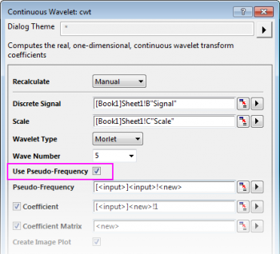
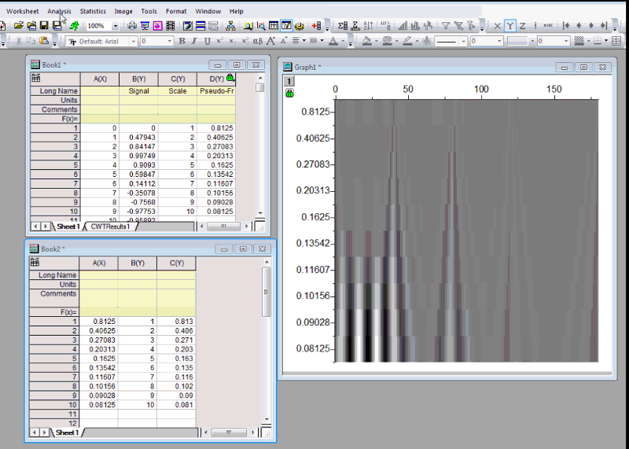

FAQ-698 Wie kann ich die Achsenskalierung der Pseudo-Frequenz in einem CWT-Bilddiagramm zeigen?
Pseudo-Frequency-in-cwt
Letztes Update: 30.07.2018
Ab Version 2015 unterstützt Origin die Pseudo-Frequenz als Achsenskalierung in Bilddiagrammen in Ausgaben der kontinuierlichen Wavelet. Um die Achsenskalierung der Pseudo-Frequenz zu verwenden, aktivieren Sie das Kontrollkästchen Pseudo-Frequenz verwenden im Dialog cwt. Das erzeugte CWT-Bild verfügt über eine Pseudo-Frequenz-Skalierung.
- 
Wenn Sie die von Origin erzeugten Hilfsstrichsbeschriftungen nicht mögen, können Sie die Positionen der Hilfsstriche und Beschriftungen manuell berechnen und dann diese Positionen und Beschriftungen im CWT-Bild verwenden. Origin bietet eine Spalte für die Pseudo-Frequenz, wodurch die Durchführung einfacher wird.
- Durch Aktivieren des Kontrollkästchens Pseudo-Frequenz verwenden im Dialog cwt erhalten Sie eine Spalte für die Pseudo-Frequenz im Quellarbeitsblatt. Fügen Sie 2 weitere Spalten hinzu, beispielsweise Col(A) und Col(B). Füllen Sie Spalte Col(A) mit den großen Hilfsstrichen, die Sie als Beschriftungen der großen Hilfsstriche verwenden möchten.
- Berechnen Sie die entsprechenden Skalierungswerte, die als als Hilfsstrichspositionen verwendet werden, und füllen Sie sie in Spalte Col(B). Legen Sie die Pseudo-Frequenz-Spalte als X und die Skalierungsspalte als verbundenes Y fest. Öffnen Sie den Dialog interp1. Wählen Sie die Pseudo-Frequenz-Spalte und die Skalierungsspalte als Eingabe und die Spalte mit den Hilfsstrichsbeschriftungen col(A) als Zu interpolierende X-Werte. Führen Sie eine Interpolation durch, um die entsprechenden Hilfsstrichspositionen zu ermitteln. Geben Sie die interpolierte Ergebnisse in Spalte Col(B) ein.
- Wechseln Sie jetzt zu dem CWT-Bild und klicken Sie doppelt auf die Y-Achse, um den Dialog Achsen aufzurufen. Setzen Sie auf der Registerkarte Skalierung im Zweig Große Hilfsstriche den Typ = “Nach benutzerdefinierten Positionen” und wählen Sie Col(B) als Position. Gehen Sie zur Registerkarte Beschriftung der Hilfsstriche und dann zur Unterregisterkarte Anzeige, setzen Sie Typ = “Datensatz mit indizierten Hilfsstrichen” und wählen Sie Spalte Col(A) als Datensatzname. Jetzt können Sie die korrekten Hilfsstriche und Beschriftungen für das Bilddiagramm ermitteln.
- 
Schlüsselwörter:Wavelet